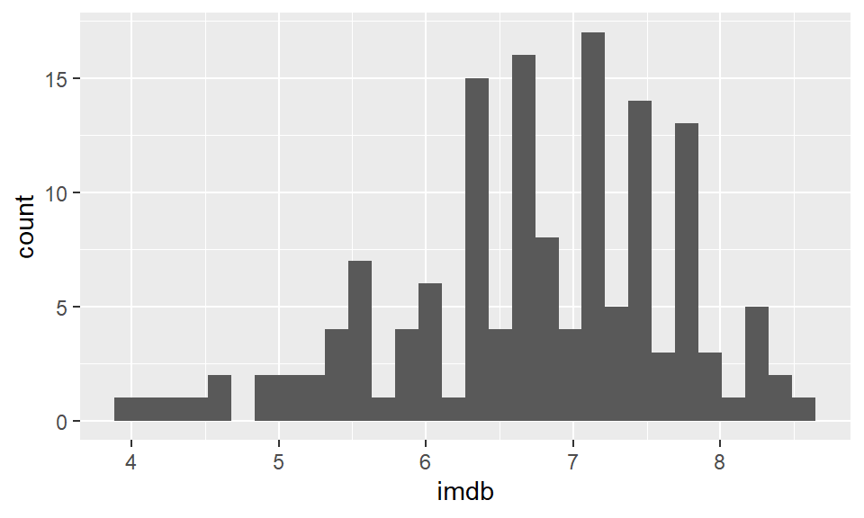

d1 <- data.frame(vals = c(1, 3, 4, 3, 6, 7, 2, 9, 3, 2, 2, 3, 1, 5, 4, 4))
d1 vals
1 1
2 3
3 4
4 3
5 6
6 7
7 2
8 9
9 3
10 2
11 2
12 3
13 1
14 5
15 4
16 4Histograms are very common data visualizations. Histograms plot the frequency on the y-axis of a continuous variable on the x-axis. For instance, let’s say we had the following data, that we’ll call d1:
d1 <- data.frame(vals = c(1, 3, 4, 3, 6, 7, 2, 9, 3, 2, 2, 3, 1, 5, 4, 4))
d1 vals
1 1
2 3
3 4
4 3
5 6
6 7
7 2
8 9
9 3
10 2
11 2
12 3
13 1
14 5
15 4
16 4If we wanted to know how many of each number in the column vals we have, we could use table():
table(d1$vals)
1 2 3 4 5 6 7 9
2 3 4 3 1 1 1 1 The table above represents the frequency table or frequency count of the data. We can plot these data like this:

In this histogram, the height of each bar represents the total amount of the number on the x-axis. So, the height of the bar at x=9 is one. This mean we have 1 of this value in our data distribution. The height of the bar at x=3 is four, therefore we have four in our distribution for the value 3.
In the example above, the width of the bars is precisely 1. We could change the width to say two. This is illustrated below:

Here, the first bar is at height 9. It spans the values of x between 1-3. The second bar is at height 4, this include values between 3.01-5, and so on. What we did here was to adjust the binwidth. When we have large distributions, adjusting the binwidth helps us to interpret the data more easily.
To describe how to make histograms with the ggplot() function, lets look at the films.csv dataset.
library(tidyverse)
film <- read_csv("data_raw/films.csv")
head(film)# A tibble: 6 x 5
film year rottentomatoes imdb metacritic
<chr> <dbl> <dbl> <dbl> <dbl>
1 Avengers: Age of Ultron 2015 74 7.8 66
2 Cinderella 2015 85 7.1 67
3 Ant-Man 2015 80 7.8 64
4 Do You Believe? 2015 18 5.4 22
5 Hot Tub Time Machine 2 2015 14 5.1 29
6 The Water Diviner 2015 63 7.2 50This dataset contains 146 rows of data. Each row has a unique film, with the final three columns giving three different ratings measures of how good the film was. These are their respective rottentomatoes, imdb and metacritic scores.
If we wished to plot the distribution of imdb scores, we need to put x=imdb inside the aes() part of the ggplot code. That is to tell it to plot these scores on the x-axis. We do not need to put a y= inside this, as we are not plotting anything from our dataset on the y-axis. Instead, ggplot2 will count up the frequency of our scores between regular intervals of imdb scores.
We then add + geom_histogram() to tell it to make a histogram. All together it looks like this:
ggplot(film, aes(x=imdb)) +
geom_histogram() `stat_bin()` using `bins = 30`. Pick better value with `binwidth`.
Now, this doesn’t look great and we have several problems with it. The two major problems that we get with our first histograms are. 1) The binwidth is almost never appropriate. We need to tell ggplot exactly what we want the binwidth on the x-axis to be. That is, what interval do we want our scores to be counted over. Looking at the graph, our scores range from just below 4 to about 8.6. Perhaps a better interval would be 0.2, so we count how many films had scores between 3.6-3.8, 3.8-4.0, 4.0-4.2, 4.2-4.4, …….. 8.4-8.6, 8.6-8.8 etc. 2) Having black bars makes it really hard to distinguish the bars when they are close in heights. We need to fix the color scheme.
OK, let’s make the bars dodgerblue and border them white. Inside geom_histogram() we use color="white" to represent the outside lines of the bars. We use fill="dodgerblue to indicate the color inside the bars should be dodgerblue.
ggplot(film, aes(x=imdb)) +
geom_histogram(color="white", fill="dodgerblue") `stat_bin()` using `bins = 30`. Pick better value with `binwidth`.Now let’s fix that binwidth. To resolve this, inside geom_histogram() we write binwidth = 0.2.
ggplot(film, aes(x = imdb)) +
geom_histogram(binwidth = 0.2, color="white", fill="dodgerblue") This looks a lot better. Now we can see that the majority of films have ratings in the 6.2-7.8 range, with relatively few above 8 and below 5. It’s not always easy to know what size interval to choose for the x-axis in histograms. It’s worth just playing around with that number and seeing how it looks.
When we set the interval to be some value - here, we chose 0.2 - R doesn’t automatically make that between easy to interpret numbers such as 4.0-4.2, 4.2-4.4 etc. It could just as easily have chosen 3.874-4.074, 4.074-4.274. Obviously, the latter is hard for us to interpret when looking at the axes. You can see in the above plot, that the vertical lines of the histogram bars don’t neatly fall on top of whole numbers. To fix, this you can adjust the boundaries by picking a value to center your interval on. So, if we pick boundary=4, then that will be a boundary marker, and the interval will go 4.0-4.2, 4.2-4.4 etc.
ggplot(film, aes(x = imdb)) +
geom_histogram(binwidth = 0.2, color="white", fill="dodgerblue",boundary=4) Just be careful with using the boundaries that it does not crop your histogram incorrectly. Changing histograms too much can lead to misrepresenting the data. We would recommend that you don’t use the boundary feature unless you have a real need to do so - just be careful!
Like with all ggplot figures, you can add as much customization as you wish. Here, we add a new theme, title and x- and y-axis labels:
ggplot(film, aes(x = imdb)) +
geom_histogram(binwidth = 0.2, color="white", fill="dodgerblue") +
theme_classic() +
ggtitle("Histogram of IMDB Ratings") +
xlab("Rating") +
ylab("Frequency")
This looks really nice !
Instead of plotting the frequency or counts of values on the y-axis, we can instead plot density. Here, we essentially convert the histogram to a solid line that estimates the overall shape of the distribution. We call this line a density curve. You can make this plot using ggplot() using + geom_density() instead of + geom_histogram().
In the code below we do this for the imdb ratings, and we make the line color navy, and the fill of the density curve dodgerblue:
ggplot(film, aes(x = imdb)) +
geom_density(color = "navy", fill = "dodgerblue") Usually the fill of these plots is too much, so it’s nice to add some transparency. You can do that by picking a number between 0 and 1 to provide to the alpha argument. Here we choose alpha = .4:
ggplot(film, aes(x = imdb)) +
geom_density(color = "navy", fill = "dodgerblue", alpha=.4)The useful thing about density plots is that they give you a quick visual aid as to the overall shape of the distribution. You can easily see where the bulk of the data lie (here between 6 and 8 ratings score), and whether the data is symmetrical or not.
Instead of just plotting one histogram or one density curve, we often are interested in comparing two or more distributions. This means we are interested in comparing two or more histograms or density curves. To do this, we first need to ensure that our data are all measured in the same units.
Overlaid Histograms
To illustrate this, let’s use the lifeexp.csv data which contains life expectancy data for many countries.
life <- read_csv("data_raw/lifeexp.csv")
head(life)# A tibble: 6 x 6
country continent year lifeExp pop gdpPercap
<chr> <chr> <chr> <dbl> <dbl> <dbl>
1 Afghanistan Asia year_1952 28.8 8425333 779.
2 Afghanistan Asia year_2007 43.8 31889923 975.
3 Albania Europe year_1952 55.2 1282697 1601.
4 Albania Europe year_2007 76.4 3600523 5937.
5 Algeria Africa year_1952 43.1 9279525 2449.
6 Algeria Africa year_2007 72.3 33333216 6223.You can see that one of the columns is called lifeExp which is the life expectancy of each country in either 1952 or 2007. The year is shown in the year column, and the country is shown in the country column. You’ll notice that these data are in long format.
Perhaps we are interested in the distribution of life expectancies across all countries in the year 1952 compared to the distribution of life expectancies in the year 2007. We have a few options to do this.
The first option does not look good for this example (although it may work in other situations). This is an overlaid histogram. To do this, inside aes() as well as saying which column our distribution data is in x=lifeExp, we also tell it to make separate histograms based on the year column with fill=year. This will ensure it uses different fill colors for the two different years. Although not necessary, putting position="identity" inside geom_histogram() helps make the plot a little nicer. Putting color="black" and alpha=.7 inside geom_histogram() also helps distinguish the two histograms.
ggplot(life, aes(x=lifeExp, fill=year)) +
geom_histogram(binwidth=2, position="identity", color="black", alpha=.7) +
theme_minimal()This plot is still pretty bad though. This method of plotting is better when the histograms are quite distinctive from one another and there isn’t much overlap in the distributions.
Choosing two colors that contrast more strongly than the default colors can help. Here, we are using hexcodes to pick a gray and a mustard yellow color. We manually define our fill colors using + scale_fill_manual(values = c("#999999", "#E69F00")). To change the colors, just change the hexcodes to different ones or the names of colors you’d like. Just make sure that you have the same number of colors as groups in your data. Here, we have two groups (1952 and 2007) so we need two colors. Also, notice that it says scale_fill_manual and not scale_color_manual. Because we are dealing with the inside color - this is considered to be a fill in ggplot2 terms. We used fill=year inside aes() so we need to match that with fill when manually choosing colors.
ggplot(life, aes(x=lifeExp, fill=year)) +
geom_histogram( binwidth=2, position="identity", color="black", alpha=.7) +
theme_minimal() +
scale_fill_manual(values = c("#999999", "#E69F00"))
Overlaid Density Plots
Comparing distributions can also be done with geom_density. This is usually simpler to compare than overlaid histograms.
The default plot for this would be to include fill=year inside the aes() code, as the year column contains the data that we wish to make separate plots for.
ggplot(life, aes(x=lifeExp, fill=year)) +
geom_density(alpha = 0.4) We can add a custom fill colors with + scale_fill_manual(values = c("#999999", "#E69F00")) and a custom theme with + theme_classic().
ggplot(life, aes(x=lifeExp, fill=year)) +
geom_density(aes(fill = year), alpha = 0.4) +
scale_fill_manual(values = c("#999999", "#E69F00")) +
theme_classic()This plot is now very easy to interpret. It’s clear that in 2007 most countries had life expectancies of over 70, with a tail towards younger life expectancies. In 1952, the opposite pattern is found with most countries having life expectancies around 40 with the tail going towards older countries.
Stem-and-leaf plots are a simplistic version of histograms. Before the advent of computers, this kind of plot would sometimes be easier to make than a histogram. Their heyday was quite a few decades ago! In fact, nowadays, these types of plots are almost never made by researchers or data scientists in the real world. They are pretty much exclusive to introductory statistics courses. This is a bit of a shame because we think they are pretty cute.
Here is an example. Imagine we have the following numbers in a distribution. They may represent temperatures:
20, 20, 23, 28, 29, 31, 32, 39, 40, 41, 42, 44, 44, 45, 48, 49, 55, 55, 56, 58, 59, 61, 62, 65, 66, 67, 70, 71, 75, 82, 86
We can represent these in a stem-and-leaf plot as below. The first column represents the “tens” and the second column represents the “ones”. So the “6” in the last row in the second column represents a temperature of 86. We put the second column data in ascending order. The heights of these bars represent a kind of histogram of sorts.

The columns do not have to be tens and ones. For instance, if our data had been seconds, and the distribution was 2.0, 2.0, 2.3, 2.8....... 7.5, 8.2, 8.6 we could have done the same stem-and-leaf plot.
There isn’t a simple ggplot way of making stem-and-leaf plots, but there is a built-in function called stem() that can make them.
For an example, if we return to our imdb ratings:
head(film)# A tibble: 6 x 5
film year rottentomatoes imdb metacritic
<chr> <dbl> <dbl> <dbl> <dbl>
1 Avengers: Age of Ultron 2015 74 7.8 66
2 Cinderella 2015 85 7.1 67
3 Ant-Man 2015 80 7.8 64
4 Do You Believe? 2015 18 5.4 22
5 Hot Tub Time Machine 2 2015 14 5.1 29
6 The Water Diviner 2015 63 7.2 50We can make a stem-and-leaf plot of the imdb column like this. The scale=0.6 parameter dictates how long the stem-and-leaf plot should be. You can adjust it to your liking. Lower numbers make the plot shorter:
stem(film$imdb, scale=0.6)
The decimal point is at the |
4 | 0234
4 | 6699
5 | 01224444
5 | 555556678999
6 | 0011112333333333444444
6 | 5555666666666777777789999999
7 | 0000111111122222222223333344444444
7 | 555555666777788888888899
8 | 012222344
8 | 6Here, the lowest rating we have is 4.0, and the highest is 8.6.